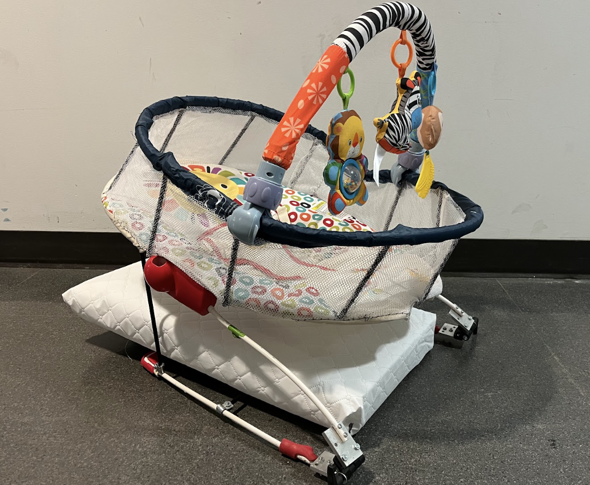
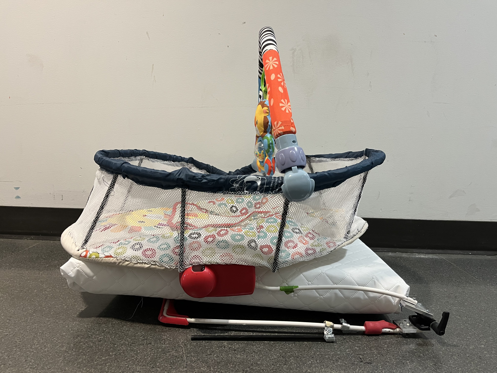
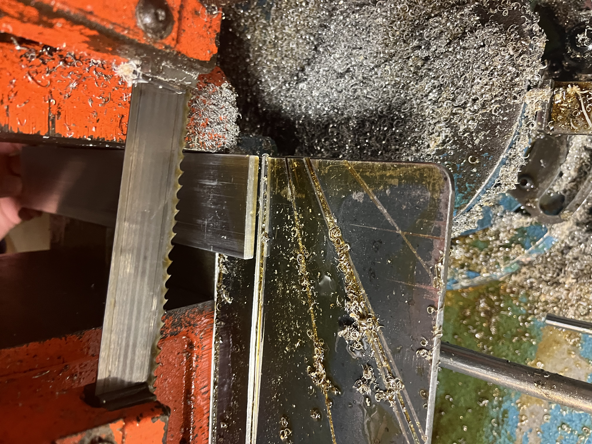
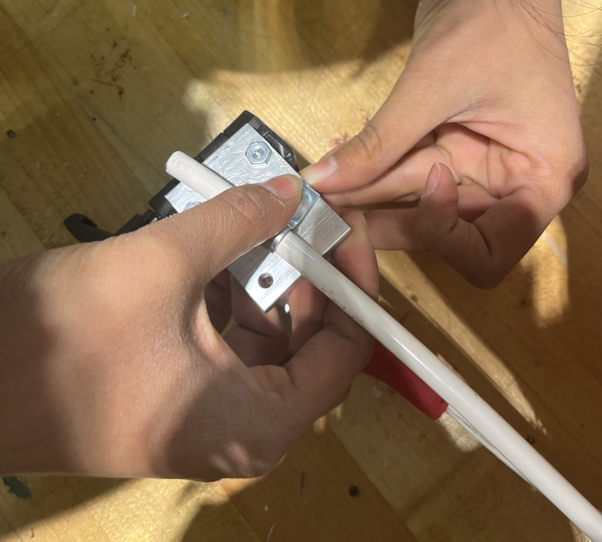
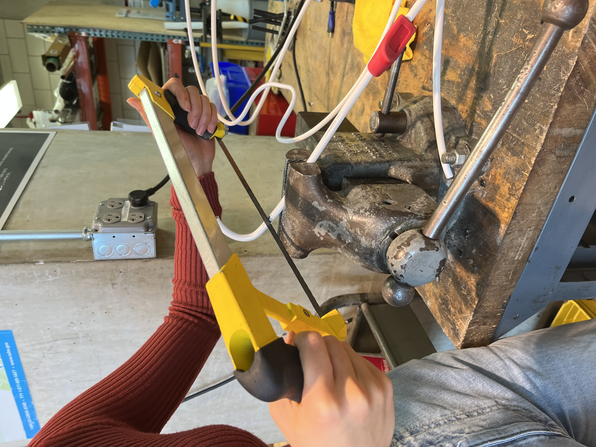

PLAY & SLEEP
Reworked baby bouncer for safer sleep
Course: Design Thinking and Communication 1 | Fall 2022

Project Summary
Babies are at risk for SIDS, asphyxiation, choking, and falling if they sleep in or are left unattended in most bouncers or rockers because the angle of incline (greater than 10º) of the device and the typically soft material do not provide proper neck and back support. Our client, KID (Kids in Danger) tasked our group with designing a solution that would allow parents and guardians to keep their babies safe even if they are to fall asleep in an entertainment device.My group designed a product called the “Play ‘N Sleep”: a baby chair that can recline, allowing parents and guardians to safely let their babies be entertained or sleep without needing to remove them from the device. The design includes 7 ½ inch walls around the circumference of the system to meet bassinet regulations to make it safe for sleep, as well as a plastic insert around the waist to encourage using the restraints thereby preventing strangling accidents. Our design satisfies the following needs:


Process
- Ideation: I was inspired by recycled glass bricks I found for free in a Chicago suburb and thought that their hollow structure would make the perfect cavity for a plant. I also envisioned the foundation being a puzzle piece of nesting components that were held together by the weight of the glass blocks.
- Prototyping: Figuring out how to make the interlocking grid for the foundation of my table was tricky and required lots of prototyping with paper, foam core, and scrap plywood.
- Mockups: I drew my table to scale in Adobe Illustrator, forming the individual pieces and then bringing them together to ensure the pieces fit together perfectly. I was also able to visualize my table better and get more organized before the construction step.
- Construction: I built the foundation of my table using red oak 4x4s and utilized the table saw and mill to “carve” out the shape each individual piece. I assembled the table using gold bolts and thread inserts, and finally put the glass blocks in place. I also used a water jet to cut the top off of a glass block in order to put a plant inside.



Learnings